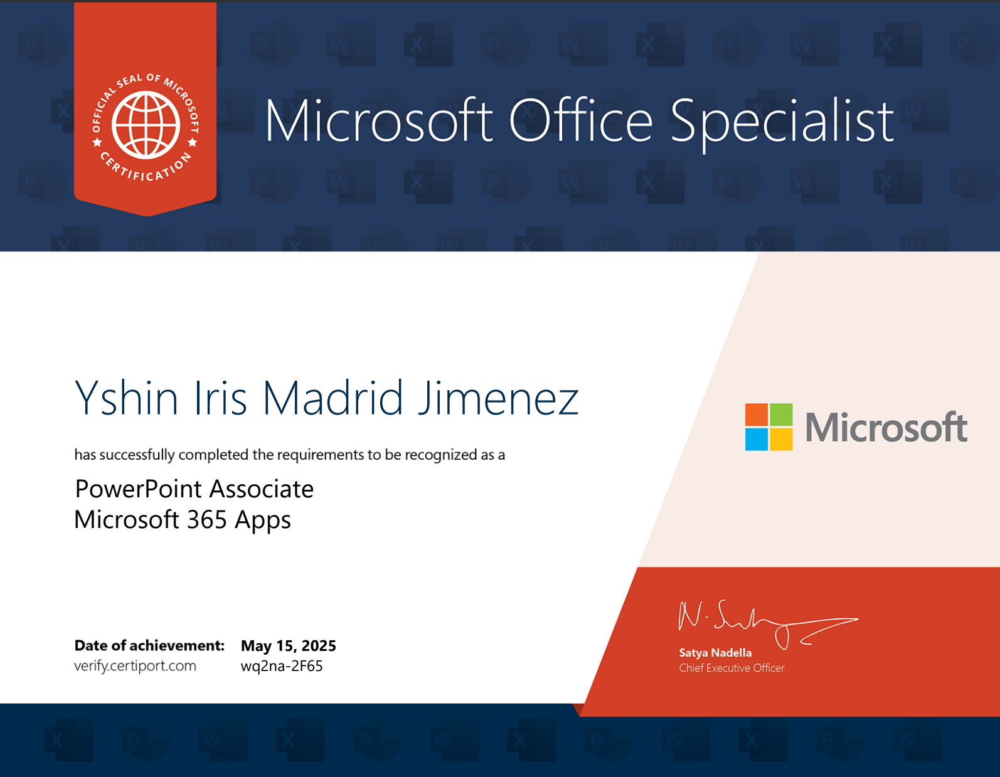
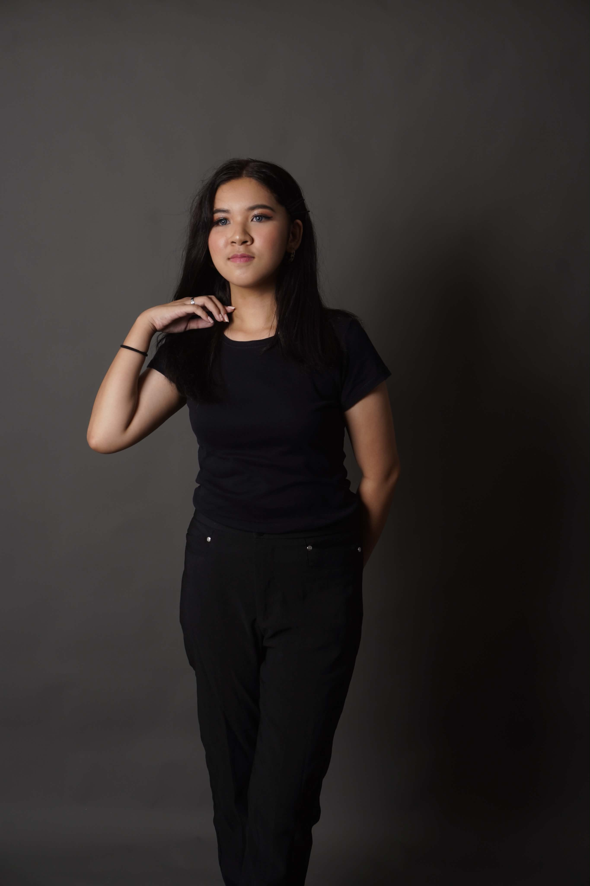

Certificates
Certificate
Microsoft Word Associate

Certificate
Microsoft PowerPoint Associate
Tech Stack


2nd Year IT Student | Portfolio
I am a 2nd Year Student taking up Bachelor of Science in Information Technology at St. Dominic College of Asia. I am a curious and creative person who enjoys learning new things and finding ways to improve myself. I like solving problems step by step and I don’t give up easily when things get hard. I value being original and true to myself, and I enjoy making ideas come to life. I try to balance being practical with being creative, and I’m motivated by curiosity and the joy of growing every day.

